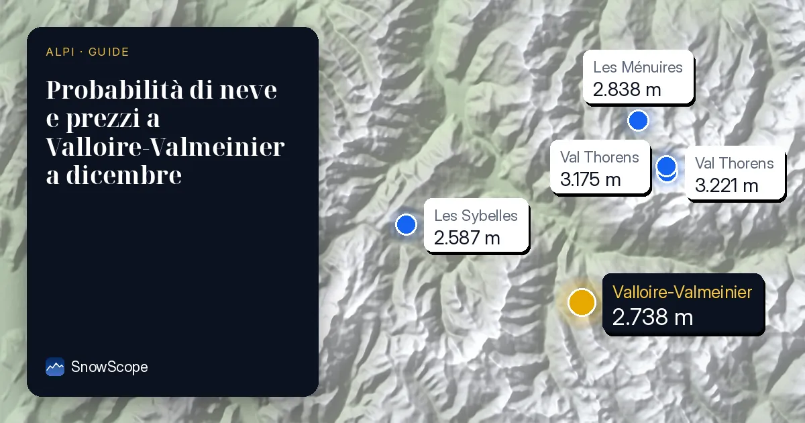

Probabilità di neve e prezzi a Valloire-Valmeinier a dicembre
Se stai pianificando una settimana bianca a Valloire-Valmeinier questo dicembre, le probabilità di neve dipendono molto dalla settimana scelta. La nostra cronologia di 46 inverni passati mostra che, sebbene la base possa essere sottile all'inizio, le piste in quota sono molto affidabili. Entro metà dicembre, la zona di metà montagna ha il 98 % di probabilità di avere almeno 30 cm di neve.
Le previsioni neve in tempo reale per Valloire-Valmeinier nell'app SnowScopeAltezza neve, allerte powder e mappa 3D, gratis.
Probabilità di neve settimanali alla base
Alla base degli impianti, che si trovano a 1.406 m, la prima settimana di dicembre è spesso povera di neve. Nella nostra cronologia, solo il 26 % degli inverni passati ha avuto almeno 30 cm di neve durante la prima settimana. Questa probabilità aumenta man mano che il mese prosegue. Entro la seconda settimana, la possibilità di avere 30 cm alla base sale al 43 % e raggiunge il 50 % tra il 15 e il 21 dicembre. Per la settimana di Natale, le probabilità migliorano al 65 %.
Se cerchi una base più profonda di 50 cm o più a 1.406 m, i numeri sono molto più bassi. Nella prima settimana di dicembre, questo è successo solo nel 2 % degli inverni passati. Entro l'ultima settimana del mese, la possibilità di una base di 50 cm è ancora solo del 30 %. La neve di solito inizia a rimanere al suolo a questa altezza intorno al 22 ottobre e la profondità abituale il 15 dicembre è di 29 cm.

Affidabilità a metà montagna e in cima
La situazione cambia notevolmente quando sali più in alto. A metà montagna, che è 2.072 m, la profondità abituale di dicembre è 66 cm. Nella prima settimana del mese, c'è il 76 % di probabilità di avere almeno 30 cm di neve. Entro la seconda settimana, questa sale all'87 %, ovvero circa 9 inverni su 10. Per il resto del mese, la probabilità è del 98 %, cioè quasi ogni inverno.
In cima agli impianti, che raggiungono i 2.738 m, la neve è molto affidabile fin dall'inizio del mese. C'è il 98 % di probabilità di 30 cm nella prima settimana e, in ogni inverno dal 1980-81, ci sono stati almeno 30 cm dall'8 dicembre in poi. La profondità abituale in cima il 15 dicembre è di 123 cm e il picco stagionale abituale a questa altezza è di 300 cm.
Rapporto qualità-prezzo sulle piste
L'area sciistica mappata ha 131 km di piste e 34 impianti, con un dislivello di 1.332 m. Per chi visita presto, c'è un prezzo speciale per il weekend di apertura del 5-6 dicembre 2026. Un pass con accesso alla pista di pattinaggio costa 20 EUR. È un costo molto basso per un weekend di sci se arriva la neve precoce.
Per il resto della stagione, un pass giornaliero per adulti Galibier-Thabor costa 54,90 EUR alla tariffa standard. Se rimani per una settimana intera, il pass per adulti di 6 giorni Galibier-Thabor costa 278,50 EUR. Questi prezzi provengono dal sito ufficiale per la stagione invernale 2026-27 e offrono accesso all'intera area collegata tra Valloire e Valmeinier.
Confronto tra Valloire e Serre Chevalier
A sud di Valloire-Valmeinier, Serre Chevalier è una stazione più grande con 157 km di piste e 70 impianti. Sebbene Serre Chevalier abbia più dislivello a 1.546 m, Valloire-Valmeinier ha spesso neve più profonda alle sue altezze chiave. A metà montagna, Valloire (2.072 m) ha una profondità abituale di dicembre di 66 cm, mentre Serre Chevalier (1.992 m) di solito ne ha 58 cm. In cima agli impianti, Valloire (2.738 m) registra una profondità abituale di 126 cm rispetto ai 111 cm di Serre Chevalier (2.765 m).
La probabilità di avere 50 cm o più a metà montagna nella terza settimana di dicembre è dell'80 % a Valloire, ma solo del 59 % a Serre Chevalier. Anche i prezzi differiscono durante il periodo festivo. Un pass di 6 giorni a Serre Chevalier costa 276,00 EUR prima del 18 dicembre, ma sale a 345,00 EUR dal 19 dicembre al 1° gennaio. In confronto, il pass di 6 giorni di Valloire costa 278,50 EUR per lo stesso periodo.
Tendenze storiche e condizioni attuali
La nostra cronologia di 46 inverni passati mostra che le profondità della neve a dicembre sono generalmente aumentate. Nei primi 15 inverni dei nostri registri, dal 1980-81 al 1994-95, la metà della montagna aveva una media di 55 cm a dicembre. Negli ultimi 15 inverni, dal 2011-12 al 2025-26, quella media è salita a 69 cm. In cima agli impianti, la media è aumentata da 106 cm a 129 cm tra quei due periodi. In un inverno abituale, ci sono 226 giorni di neve a metà montagna.
Il 13 novembre 2026, la stima della neve mostra 0 cm alla base e a metà montagna, con 16 cm in cima. I prossimi 7 giorni dovrebbero portare 22 cm di neve fresca alla base, 58 cm a metà montagna e 82 cm in cima. Tra il 13 novembre e il 26 novembre 2026, le previsioni a due settimane per metà montagna e oltre suggeriscono un intervallo da 69 cm a 99 cm di neve fresca, con una stima media di 84 cm.
Consigli per sciatori
- Prenota per la settimana del 22-28 dicembre se vuoi la migliore possibilità di neve alla base di 1.406 m, che ha una probabilità del 65 % di avere 30 cm.
- Concentra il tuo sci sopra i 2.072 m dove c'è una probabilità del 98 % di avere 30 cm di profondità di neve dal 15 dicembre in poi.
- Acquista il pass per adulti di 6 giorni Galibier-Thabor per 278,50 EUR sul sito ufficiale per coprire i 131 km di piste.
- Controlla sempre il bollettino valanghe prima di considerare qualsiasi sci fuori pista, specialmente quando la profondità in cima raggiunge i suoi soliti 123 cm.
Altre mappe (siti esterni)
Riferimenti e crediti
- Valloire, official ski pass shop (Galibier-Thabor), winter 2026-27 skipass.valloire.com/fr/
- Serre Chevalier, official booking site, ski passes 2026-27 reservation.serre-chevalier.com/achetez-vos-ski-pass-serre-chevalier-et-autres-prestations.html
- SnowScope, December snow at three heights and today's snow map snowscope.app/
Su questi numeri
Neve attuale e tendenza a due settimane: previsioni SnowScope (tendenza da ECMWF e GFS, un intervallo, non una promessa). Impianti e piste: mappatura OpenSkiMap. Prezzi: le pagine ufficiali qui sotto, lette il 2026-11-13; i prezzi possono cambiare, verificare prima di prenotare.
Bollettini valanghe ufficiali: Météo-France – Bulletin d'estimation du risque d'avalanche
Cita questo articolo
Per ricerca, didattica o stampa: numeri e grafici sono liberamente riutilizzabili con licenza CC BY 4.0 citando così.
SnowScope (2026), Probabilità di neve e prezzi a Valloire-Valmeinier a dicembre, https://snowscope.app/blog/it/2026/11/valloire-valmeinier-december-snow-odds-value-2026.html, consultato il 2026-11-14
SnowScope (Atlas Labs). (2026, November 14). Probabilità di neve e prezzi a Valloire-Valmeinier a dicembre. SnowScope snow reports. https://snowscope.app/blog/it/2026/11/valloire-valmeinier-december-snow-odds-value-2026.html
BibTeX
@misc{snowscope2026valloirevalmeinierdecemb,
author = {{SnowScope (Atlas Labs)}},
title = {Probabilità di neve e prezzi a Valloire-Valmeinier a dicembre},
year = {2026},
month = nov,
howpublished = {\url{https://snowscope.app/blog/it/2026/11/valloire-valmeinier-december-snow-odds-value-2026.html}},
note = {Published 2026-11-14 13:29 UTC; accessed 2026-11-14}
}· CC BY 4.0 · Metodi, dati e strumenti →
Valloire-Valmeinier: neve e temperatura per quota, quest'inverno vs lo scorso (strumenti) →
Segui Valloire-Valmeinier
Gratis: un messaggio quando arriva la neve e il meteo ogni mattina.